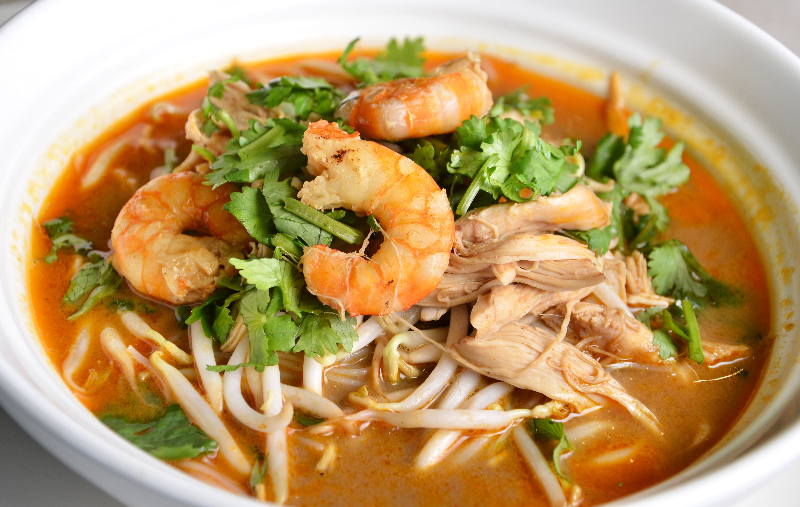
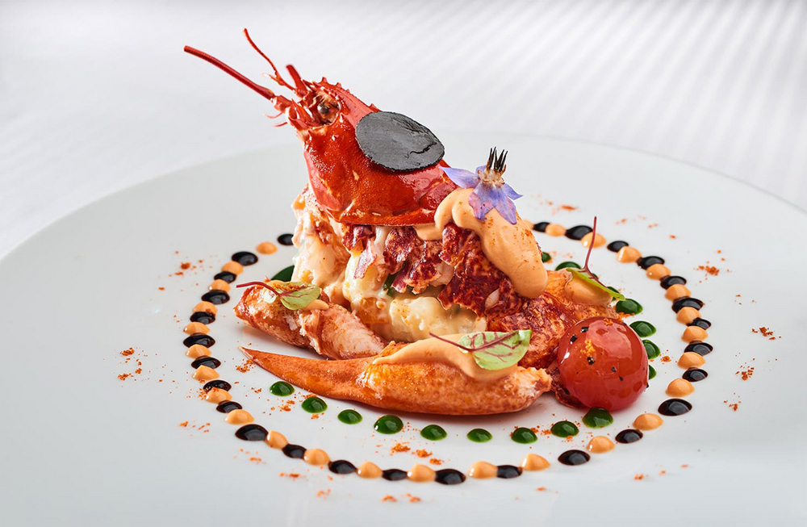

это уникальная и ароматная закуска, которая покорит вас своим разнообразием вкусов и текстур. Пинчос - это традиционное испанское блюдо, состоящее из различных ингредиентов, нанизанных на шпажку. Оно является одним из главных представителей тапас - культовой испанской кухни.
Цена: 12 500 рублей

Суп карри лакса
Cуп сочетает в себе восточные специи, нежное кокосовое молоко и свежие морепродукты, создавая настоящий взрыв вкусов на вашем языке Главным ингредиентом этого блюда является кокосовое молоко, которое придает супу нежность и кремовость. В нем также присутствуют свежие креветки, которые дополняют вкусовой букет блюда своей сочностью и морским оттенком.
Цена: 300 000 рублей

Теплый лобстер по-летнему
это изысканное блюдо, которое не оставит равнодушным ни одного гурмана. Главным героем этого блюда является свежий лобстер, приготовленный на гриле. Мясо лобстера остается нежным и сочным, а его аромат и вкус придают блюду особую привлекательность. Блюдо подается с ароматными и свежими летними овощами, которые придают ему особую свежесть и легкость. Дополняется теплый лобстер по-летнему нежным соусом, который подчеркивает его вкус и аромат, создавая идеальное сочетание